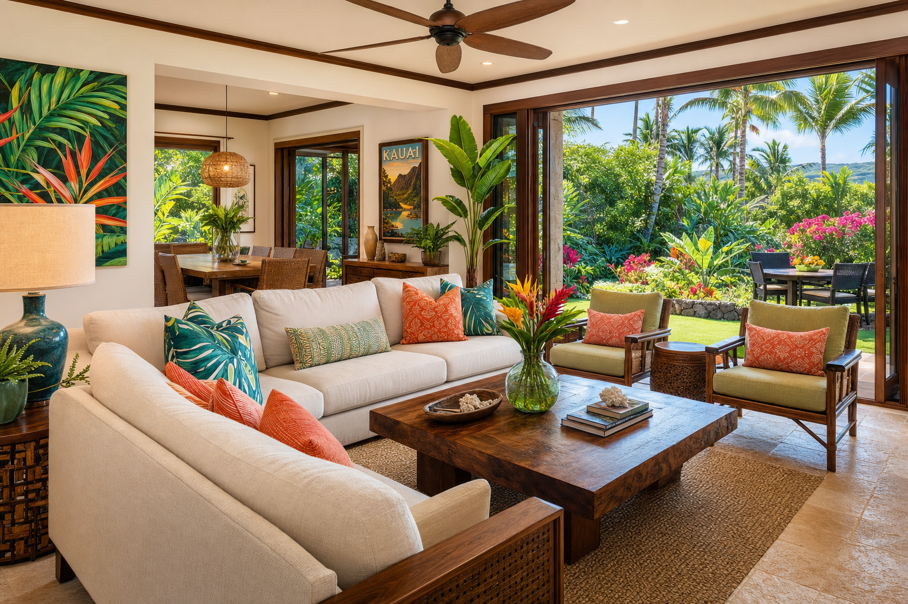

Over 16 years of tile and stone work on Kauai, we've had the privilege of working on some of the island's most beautiful homes — from 1950s plantation cottages in Lihue to oceanfront contemporary estates on the North Shore. Each project teaches us something about what makes a renovation feel truly right for this place. Here are some of the design principles and project stories that have stayed with us.
The Poipu Plantation Restoration
One of our most meaningful projects was a meticulous restoration of a 1930s plantation home in Poipu that had been neglected for decades. The owner wanted to preserve the home's historical character while making it livable for a modern family. We worked with saltillo-inspired terracotta tile in the main living areas — warm, handmade, slightly irregular — that felt in conversation with the home's age. In the bathrooms, we used simple white subway tile with black hexagon floor tile. The result felt honest to the period while being completely functional for contemporary life.
North Shore Lava Stone Integration
A home near Hanalei Bay gave us the opportunity to work with locally-sourced basalt throughout its outdoor areas. The owner wanted the home's outdoor spaces to feel continuous with the landscape — as if the floors grew out of the earth. We used split-face basalt for retaining walls and pool surrounds, and large-format honed basalt pavers for the lanai. Surrounded by the jungle, with the stone floors extending into garden paths, the effect was exactly what the client envisioned: a home that felt rooted in Kauai.
Design Principles for Kauai Homes
After hundreds of projects, a few principles consistently produce the best results: materials should feel connected to the island's natural palette (warm, earthy, organic); indoor-outdoor transitions should feel seamless through consistent flooring materials or complementary choices; simplicity serves Hawaii better than elaborate patterns (the island provides enough visual richness already); and durability should never be sacrificed for aesthetics — a beautiful floor that fails in five years is not a good design decision. We bring these principles to every project we take on.
Free consultations and quotes from Kauai's premier tile and stone craftsmen.
Get Free Quote →